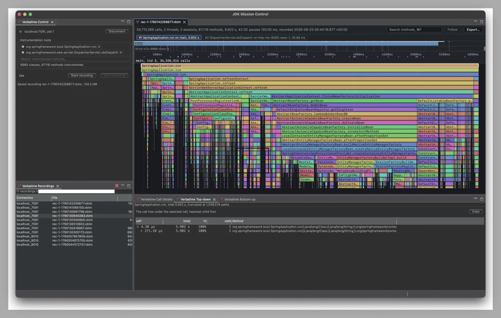
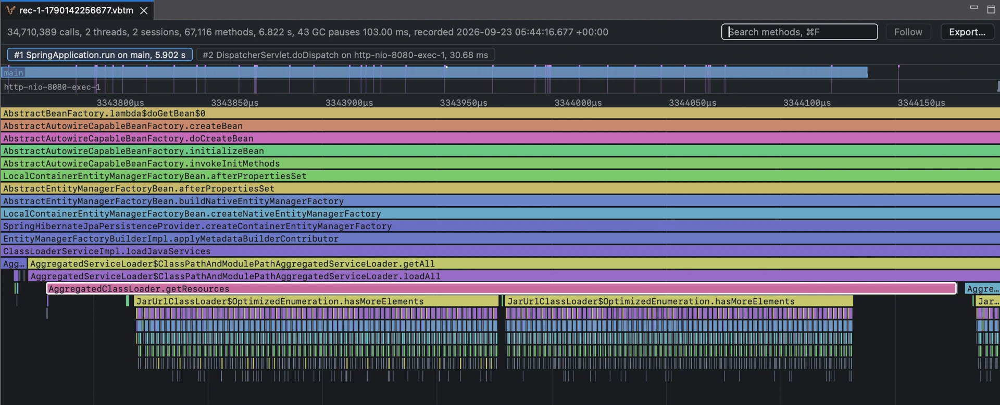

Java method tracing profiler
Every call, as it happened.
Records every Java method call under the methods you choose, with nothing sampled, and shows each run as its own flame chart.

Why Verbatime
You need every call it made, in order.
To see where one request, one server startup, or one batch job spent its time, you need every call it made, in order. A sampling profiler only sees some of them, and most other profilers merge all requests into one call tree or flame graph.
All requests, merged
Flame graphEach run, every call
Timeline flame chart- Every call
- Nothing sampled
- Each run of a method you choose becomes one call tree, and nothing is dropped.
- Drop in
- 1 flag
- Add one
-javaagentflag. No code changes. - Cheap
- ~35 ns
- A recorded call costs about 35 ns.
- Large recordings
- 100M+ calls
- 100 million calls open smoothly.
Quick start
Record a run in two steps.
Download verbatime-agent.jar and the JDK Mission Control plugin, verbatime-jmc-plugin.jar, from the GitHub releases page. Then record your application from startup until the JVM exits.
-
Run the application with the agent
roots=names the method to record, andout=the file to write.java -javaagent:/path/to/verbatime-agent.jar=record=startup,roots=com.example.app.OrderService::placeOrder,out=trace.vbtm \ -jar app.jar -
Read the recording
When the JVM exits, open
trace.vbtmin JDK Mission Control withFile > Open. The Verbatime plugin shows each run as a timeline flame chart.You can also read it from the command line with vbtm.
vbtm sessions trace.vbtm --sort dur

Ways to use it
Two ways to record, two ways to read.
With the agent alone
Record everything from startup until the JVM exits, to a file.
RecordWith JDK Mission Control
Start and stop recording at any time while the application runs.
ReadFrom the command line
Find a slow call with vbtm, a few hundred lines at a time. Or add the vbtm skill to an AI agent, and ask it why a request was slow.
ReadIn JDK Mission Control
Open a recording and see each session as a timeline flame chart. Search for a method to highlight its calls.
Use cases
Find out why it is slow.
A slow request
Record each request to a Java server as its own call tree, find the slowest with vbtm, and compare them with a typical one.
Slow startup
Record startup from main() as one call tree, then find which phase and which Spring Boot beans took the time.
A slow test
Record every JUnit test method as its own call tree in Maven or Gradle, and find the slowest tests by name.
A slow batch job
Record a Java or Spring Batch job until the JVM exits, and see how its time splits between reading, processing, and writing.
No application at hand? Examples has ready-to-run Docker Compose setups for web servers, application servers, databases, messaging, tests, and batch jobs.
Record your first run.
Verbatime is for development. Run it on your machine to check the performance of a feature you built, not in production.